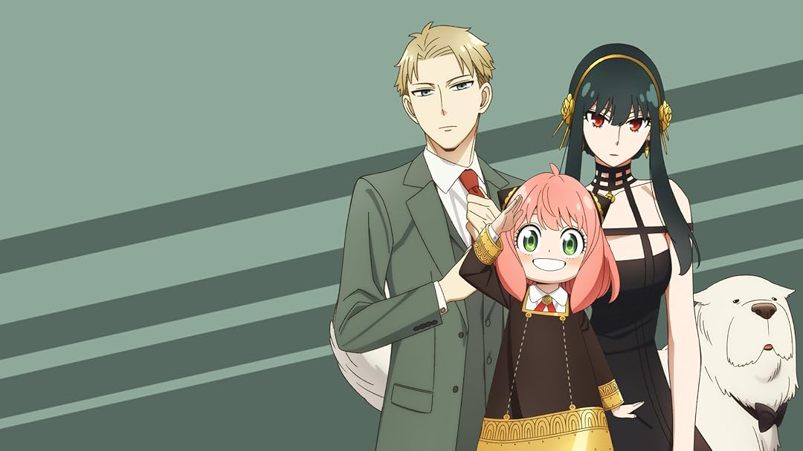
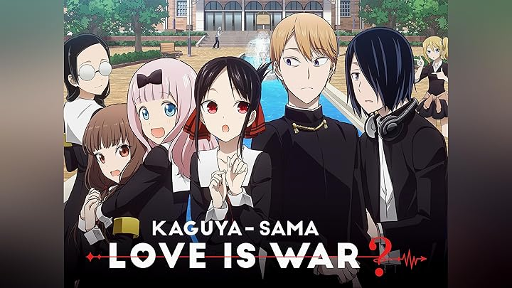
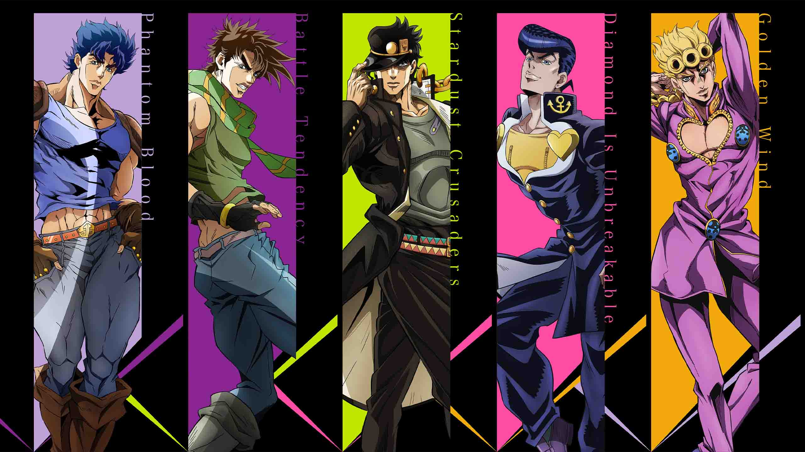
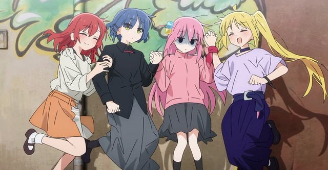
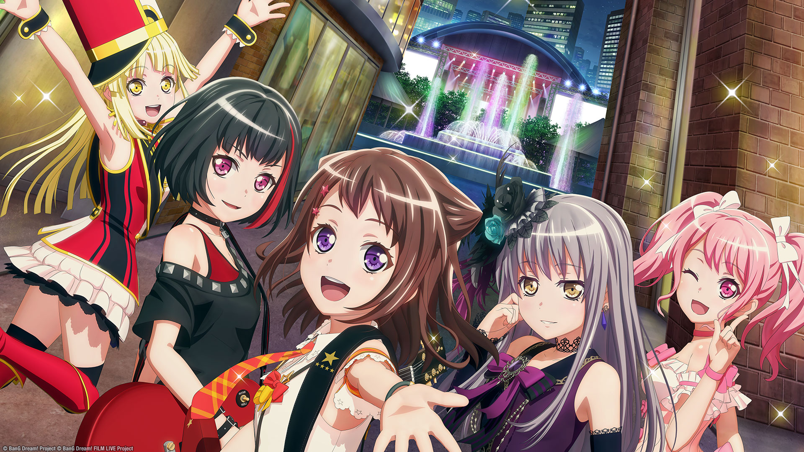

Animes populares en Aniplus

Spy x Family
Un espía debe formar una familia falsa... ¡con una telépata y una asesina!
- Temporadas 1-2: 12-13 episodios

Kaguya-sama
Dos genios escolares luchan en una guerra romántica de orgullo e ingenio.
- 3 temporadas + película

JoJo’s Bizarre Adventure
La excéntrica saga de los Joestar a través de generaciones y poderes únicos.
- 6 partes con 12-39 episodios cada una

Blue Lock
Japón busca crear al mejor delantero del mundo en un sistema extremo.
- Temporada 1: 24 episodios

Erased
Un joven viaja al pasado para evitar el secuestro de una compañera.
- 1 temporada: 12 episodios

Bocchi the Rock!
Una tímida guitarrista busca brillar en una banda con sus nuevas amigas.
- Temporada 1: 12 episodios

BanG Dream!
Chicas forman bandas y persiguen su sueño musical con pasión y esfuerzo.
- 4 temporadas + películas

The Promised Neverland
Niños huyen de un orfanato que oculta un oscuro y macabro secreto.
- Temporadas 1-2: 11 episodios c/u
86
Una unidad militar oculta lucha por su dignidad en una guerra cruel.
- 2 partes: 23 episodios
Lycoris Recoil
Agentes secretas adolescentes defienden la paz con estilo y café incluido.
- 1 temporada: 13 episodios